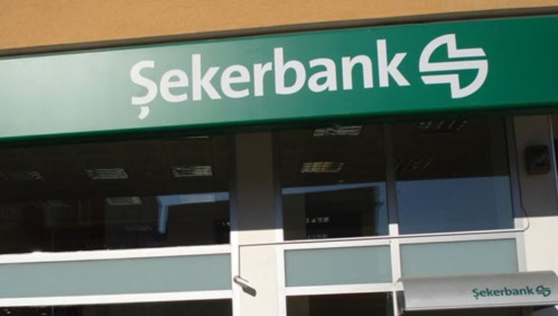
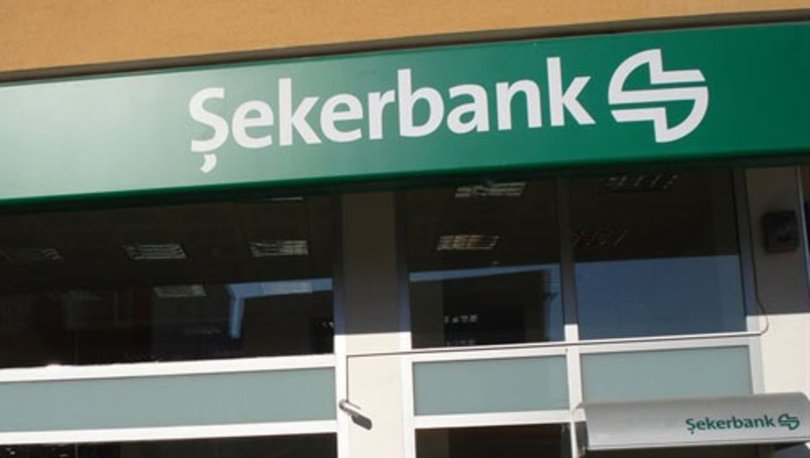

ŞEKER BANK
İletişim Bilgileri
ÖZGEÇMİŞİM
Şekerbank, Anadolu’da yüz binlerce pancar kooperatifi üyesi çiftçinin birikimleriyle yerel kalkınmayı, sürdürülebilir üretimi ve tarımsal sanayiyi desteklemek amacıyla 12 Ekim 1953’te “Pancar Kooperatifleri Bankası A.Ş.” adıyla Eskişehir’de kurulmuştur. Banka, 1956 yılında Ankara’ya taşındığında Şekerbank adını almıştır. 1997 yılında hisselerinin bir bölümü halka arz edilen Şekerbank’ın, genel müdürlüğü 2004 yılında İstanbul’a taşınmıştır. Esnaf/İşletme Bankacılığı, Kurumsal/Ticari Bankacılık, KOBİ ve Tarım Bankacılığı ile Bireysel Bankacılık alanlarında faaliyet gösteren Şekerbank, bu alanlardaki uzmanlığı, enerji verimliliği yatırımları ve girişimcilere sunduğu destekler ile uluslararası finans kuruluşları nezdinde yereldeki yaygın müşteri profiline ulaşmak için “Türkiye’nin anahtar bankası” olarak konumlanmıştır. Yüzde 72’si Anadolu’da bulunan şubeleri ile çiftçi, esnaf ve işletmeleri en iyi anlayan ve onlara özel çözümler sunan Şekerbank, hem yerel bankacılıktaki bilgi birikimi hem de yaygın şube ağı ile rekabette farklılaşmaktadır. Türkiye genelinde 1 adet gezici şube olmak üzere 238 şubesi, 7 bölge müdürlüğü (1 İstanbul, 6 Anadolu) bulunan Şekerbank’ın, 67 il ile 90 merkez dışı ilçeye yayılmış şubelerinin birçoğu yaklaşık yarım asırdır aynı yerde, yörede hizmet vermektedir. Şubelerinin yanı sıra sekerbank.com.tr, 0850 222 78 78 çağrı merkezi, ATM, mobil bankacılık ve sosyal medya hesapları aracılığıyla da müşterilerine hizmet sunan Şekerbank’ın iştirakleri arasında Şeker Yatırım, Şeker Factoring, Şeker Leasing, Şekerbank Kıbrıs Ltd., Şeker Finans, Şeker GYO ve Şekerbank International Banking Unit Ltd. bulunmaktadır. Banka’nın tüm süreçlerini ve teknolojik altyapısını uçtan uca yenilediği Dijital Transformasyon Programı kapsamında da başta finansal erişimin yaygınlaştırılması olmak üzere sürdürülebilir bankacılık uygulamaları önceliklendirilmiş ve Şekerbank, kırsal kesimin finansmanına özel Türkiye’de ilk olan dijital uygulamalar geliştirmiştir. Tabana yaygın bankacılık anlayışıyla misyonunu “Anadolu Bankacılığı” olarak tanımlayan Şekerbank, Türkiye’nin ilk mikro finansman kredilendirme modelini uygulayarak bankacılık hizmetleriyle tanışmamış kesimlere ulaşmakta; saha bankacılığı yaparak finansmana erişimin her segmentte eşit olması için projeler geliştirmektedir. Toplam kredi portföyünün büyük bölümünü çiftçi, esnaf, işletme ve kurumsal firmalara ayıran Şekerbank, müşterilerine krediden daha öte değer yaratmak için reel sektör, kamu ve STK’ları da dahil ettiği sosyal platformlar oluşturmaktadır. Enerji verimliliği yatırımlarını bireylerden işletmelere tabana yaygın bir yapıda destekleyerek, 2009 yılında Türkiye’de bir ilk olarak geliştirdiği EKOkredi ile 120 bini aşkın kişiyi enerji tasarrufu ile tanıştırmıştır. Bankacılık sektöründeki ilklerden birini başararak 2008 yılında Çevre ve Sosyal Duyarlılık Yönetmeliği’ni yayınlayan ve yine bu kapsamda kredilendirme süreçlerinin çevresel ve sosyal etkilerini dikkate alan ilk bankalardan biri olan Şekerbank, dünyanın önde gelen iklim değişikliği ile mücadele platformlarından biri olan Karbon Saydamlık Projesi’nde (CDP) yer almaktadır. Banka, Birleşmiş Milletler Küresel İlkeler Sözleşmesi’nin de imzacısıdır. Şekerbank, Türkiye’de kredilendirme süreçlerinde çevresel ve sosyal etkileri ölçen öncü bankalardan biri olarak, bu alanda uluslararası işbirlikleri yürütmektedir. Üretimin sürdürülebilirliği için çiftçiler toprağını, köyünü bırakıp gitmesin diye dünyada bir ilk olarak “Aile Çiftçiliği Bankacılığı”nı başlatan Şekerbank, proje ile tarım ve kırsal kalkınmayı desteklerken, yerel kültürün yaşaması için de çalışmaktadır. Banka, 2011 yılında “Dünyanın ilk KOBİ Kredileri teminatlı Menkul Kıymet (VTMK) ihracını” gerçekleştirerek, uluslararası finans kuruluşları ile Türkiye’nin KOBİ’leri arasında önemli bir finansman köprüsü kurmuştur. Şekerbank, Türkiye’nin kurumsal yönetim notu alan ilk bankası olarak, bu alandaki öncü rolünü de korumaktadır.
Vizyonumuz
Misyonumuz
- Anadolu Bankacılığı anlayışıyla köyden kente;
- Yerel özellikleri ve ihtiyaçları dikkate alan
- Bankası olmayanları da bankacılık hizmetleriyle tanıştıran,
- Mutlu müşteri, çalışan ve ortaklarıyla değer yaratarak birlikte büyüyen,
- Gücünü köklü geçmişinden alan, çağdaş bir bankayız.
YÖNETİM KURULUMUZ
-
Yönetim Kurulu Başkanı
Dr. Hasan Basri GÖKTAN
Yönetim Kurulu Başkan Yardımcısı
Yernar ZHANADIL
Yönetim Kurulu Murahhas Üyesi, Genel Müdür Vekili
Nariman ZHARKİNBAYEV
Yönetim Kurulu Üyeleri
Mehmet Ayhan ALTINTAŞ -Bağımsız Yönetim Kurulu Üyesi
Çetin AYDIN - Yönetim Kurulu Murahhas Üyesi
Orhan KARAKAŞ – Yönetim Kurulu Murahhas Üyesi
Almat ZHAMIYEV-Yönetim Kurulu Üyesi
Levend TORUSDAĞ - Yönetim Kurulu Üyesi
Mehmet ERTÜRKMEN - Yönetim Kurulu Üyesi
Andrey KRAVCHENKO - Yönetim Kurulu Üyesi
Hikmet Aydın SİMİT-Yönetim Kurulu Üyesi
Genel Müdür Yardımcıları
Aybala ŞİMŞEK – Strateji, Transformasyon ve Finansal Kurumlar
Hüseyin ÜST - Kredi İzleme ve Sorunlu Alacak Yönetimi
Burak Latif LATİFOĞLU – Mali Kontrol, Raporlama ve Bütçe Yönetimi
Mehmet AK – Bilgi Teknolojileri
Çiğdem ÜNSAL – İnsan Kaynakları
Şükrü Tuğbay KUMOĞLU - KOBİ, Perakende ve Tarım Bankacılığı
Ender DİLEKÇİ- Kredi Yönetimi
 
